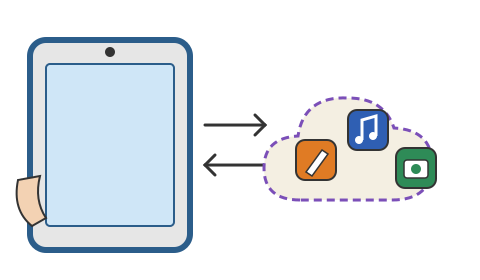

Hardware and software
Learn with an AI tutor
An AI tutor explains this page to you and helps you with the exercises. Choose your assistant:
Open with Claude Open with ChatGPT Open with Mistral Vibe
You use your own account with the provider. The assistant is not offered by lernapps.net: lernapps only provides the content and the exercises. The choice holds for all pages, on this device only.
Station 2: What can you touch?
At station 1 you found computer systems. Now Jona is putting signs on the tablet in the exhibition. He asks: “Which of these can I actually touch?”
On this page you learn to tell hardware from software. And you see why a device needs both.
Exercise
Solution
The screen right answer
You can touch the screen, for example with your finger.
The camera right answer
The camera is a small part in the case. You can touch it.
The drawing app
You see the drawing app on the screen. But you can only touch the screen, not the app.
A game
A game is a program. You can play it, but you cannot hold it in your hand.
The screen and the camera are parts you can touch. Apps and games are programs.
Touchable and not touchable

© CC-BY-4.0- case
- screen
- camera
- drawing app
- music app
- camera app
On the left the hardware: you can touch 1 to 3. On the right in the cloud the software: not 4 to 6.
- hardware
All the parts of a computer system that you can touch, for example the screen, the keyboard and the camera.
- software
All the programs of a computer system. On tablets and smartphones they are often called apps. You cannot touch them.
The dashed cloud only shows: not touchable. The apps are inside the device. The arrows in the picture show: they need each other. The software tells the hardware what to do. The hardware does it. Without software the hardware does nothing useful. Without hardware the software has nowhere to run.
Remember
Ask yourself: Is it a part you can touch? Then it is hardware. Is it a program, an app? Then it is software. The screen shows software, but is itself hardware.
Exercise
Solution
Right answer: The statement is false.
False. The game is a program, so it is software. It runs on the hardware, but you cannot touch it.
Example: taking a photo
The camera and the camera app work together
- Selin taps the icon of the camera app. The software starts.
- The camera app tells the camera: “Take a picture now.”
- The camera takes the picture. The screen shows it.
Without the camera app, the camera does not know when to take a picture. Without the camera, the app has no picture.
Practise at the station
Exercise
Three worked tasks, each with its solution:
Task no. 1
Jona's next sign says: battery. Is it hardware or software?
Hint
You can touch hardware, but not software.
Solution
- You can touch the battery when the device is opened. Answer: Hardware.
Right answer: Hardware
Task no. 2
Jona's next sign says: headphones. Is it hardware or software?
Hint
You can touch hardware, but not software.
Solution
- You can touch headphones and put them on. Answer: Hardware.
Right answer: Hardware
Task no. 3
Jona's next sign says: drawing app. Is it hardware or software?
Hint
You can touch hardware, but not software.
Solution
- The drawing app is a program. You see it on the screen, but you cannot touch it. Answer: Software.
Right answer: Software
Exercise
Solution
Right answer: camera – camera app; loudspeaker – music app; microphone – voice recorder app
Each app needs a piece of hardware to work with: the camera app needs the camera, music the loudspeaker, recordings the microphone. The weather app mainly needs the screen.
Exercise
Solution
It does nothing useful right answer
No program tells the hardware what to do. So the tablet stays useless.
It still shows photos
To show photos, the tablet needs a program. That is missing here.
It makes its own apps
People write apps. Hardware alone cannot invent programs.
Hardware needs software, otherwise it does not know what to do.
Well done: every device now has a “hardware” sign and a list of its software. At the next station you use a program yourselves: a drawing program.
Found a mistake or have an idea for this app?